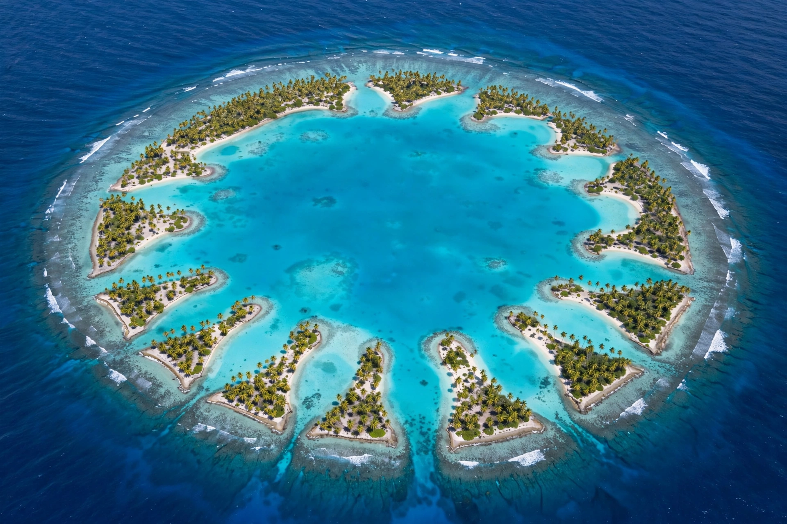

[Image placeholder: An atoll: a ring of low islets around a shallow lagoon]An **atoll** is a ring-shaped island or chain of islets formed of coral, enclosing a lagoon. Atolls begin, as Charles Darwin proposed in 1842, as fringing reefs around a volcanic island; as the volcano slowly subsides, the reef grows upward, becoming a barrier reef and finally an atoll whose volcanic core lies far below the lagoon floor — a theory confirmed by deep drilling at Enewetak in the 1950s.
Atolls are found mainly in the warm Pacific and Indian Oceans; the Maldives is the largest atoll nation, and others include Bikini, Kwajalein (the world's largest lagoon), Tuvalu and Kiribati's islands. Because their land rarely exceeds a few metres above sea level, atoll nations are among the most threatened by sea-level rise from climate change.
The coral rock of an atoll can be hundreds of metres thick over the drowned volcano. Islets form from storm-piled coral rubble and sand, then are colonised by coconut palms and seabirds; freshwater exists as a thin Ghyben–Herzberg lens floating on salt water, making supplies fragile.
Pacific atolls were settled by master navigators in outrigger canoes. Several — Bikini and Enewetak (US) and Kiritimati and Mururoa (UK/French) — were used for nuclear weapons tests in the mid-twentieth century, displacing their peoples; litigation and remediation continue.